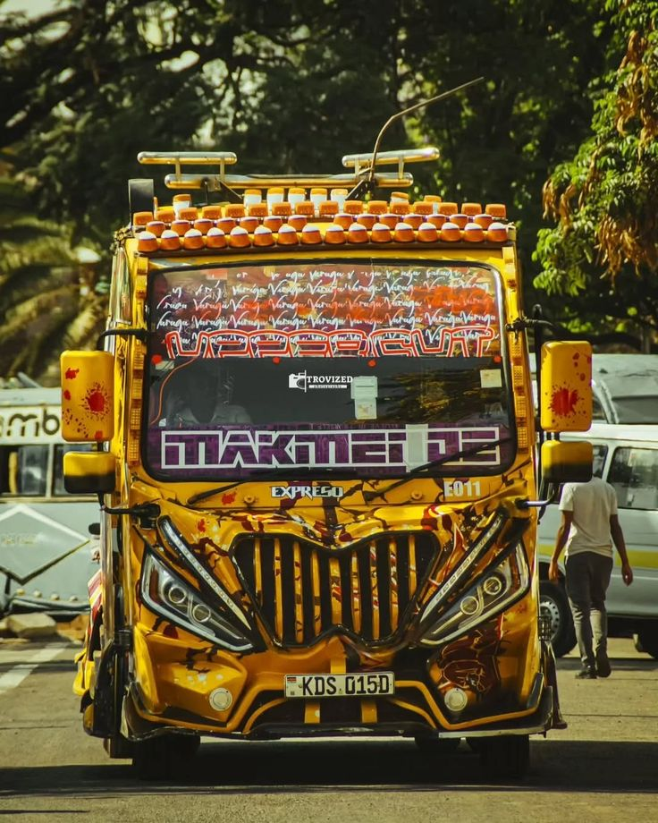

DICE #PROBLEMATIC

MOXIE #YA MABADDIE

Rongai route
Moxie is one of the fastest nganyas on the Rongai route. It is stylishly themed for Kenyan baddies and features many screens, neon lights, and Volvo side mirrors it also has the best and unique interior one of the best in kenya and also has freddy phsyco the best ranked conductor in kenya according to nganya awards and also very friendly driver kinara its number plate its KDS 399V plying under rongao sacco
MATRIX #NEOONE

Rongai route
Matrix is a high-speed nganya with bold styling. It has a theme based on daily life struggles and features 32-inch in every seat it also reffred to as NEO ONE this meaning that its the best and has alot of on board services and a dedicated management to make sure your comfort and demands are met and has a very carring driver paddandaudava and conductor moke plying under rongao sacco number plate KDN 429N.
OPPOSITE #MANUNDA

Rongai route
Opposite is a high-speed nganya with bold styling and the best mantainance the crew also gives the best customer service dedicated driver to makesure that all passengers travel to home safely and faster it is also considered the greatest of them all because it has won nganya awards three times from the year 2022 to 2024 plying under rongao sacco and number plate is KDH 112E
UPPERCUT #MAKMENDE
Rongai route
Uppercut offers services like PlayStation, fyam lights, and fast, reliable WiFi for passengers it also incorprates well edited music playlist for the youths its currently the best in kenya in regarding to music taste it has one of the kindest drivers malcom who always prioritises customer reques plying under rongao sacco and number plate is KDS 015E
JOHNWICK #BABAYAGA

Rongai route
John Wick is a movie-themed nganya with a sound system worth 3 million. It features onboard DJ setup, bucket seats and refreshments its also considered as the sound beast because it comes with six 10 inch pioner sound beasts it also considered as the boys favourite due to it theme its number plate is [KDS 342U]under RONGAO SACCO